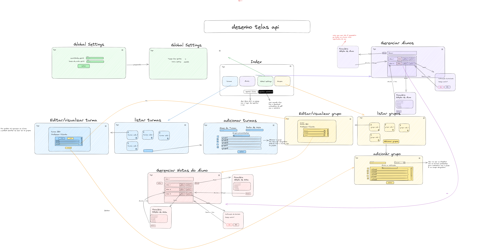

Aqui vamos discutir e explicar nosso frontend!
Para dar noção do nosso projeto, nós desenhamos todas as telas que imaginamos ser necessárias a partir do nosso backlog inicial e os requisitos.
Wireframe e fluxos do produto

Épico 1: Exportação de Dados
Tela: Index.html com botão para gerar relatórios, botão para exportar dados, e botões para acessar todas as funcionalidades do sistema.
Épico 2: Gerenciamento de Turmas Telas: gerenciamento_turmas.html (Listagem de turmas), com botão para exclusão de turmas. criar_turma.html (Criação de turma) editar_turmas.html (Edição de turma)
Épico 3: Gerenciamento de Grupos Telas: visualizacao_grupos.html (Listagem de grupos), com botão para exclusão de grupo. criar_grupo.html (Criação de grupos) editar_grupos.html (Edição de grupos)
Épico 4: Gerenciamento de alunos. Telas: gerenciamento_alunos.html (Listagem de alunos), com botão para exclusão de alunos. adicionar_aluno.html (Criação de alunos) edicao_alunos.html (Edição de alunos)
Épico 5: Gerenciamento de Ciclos de Entrega e Scores Tela: gerenciamento_ciclos.html (Listagem de notas dos alunos), com botão para exclusão de notas. editar_notas.html adicionar_notas.html
Épico 6: Configurações Globais Tela: gerenciamento_global.html (Listagem e edição de parâmetros globais), com botão para exclusão de configurações globais, que, cuidado, vai excluir a turma inteira. editar_gerenciamento_global.html
Estilização dos Componentes
CSS CLASSLESS é um stylesheet que não define classes que necessitem adicionar ao seus elementos HTML para estilizá-los. Como resultado você adiciona o style a qualquer plain-HTML só linkando o stylesheet.
Dessa maneira o desenvolvimento fica mais rápido e fluido de maneira que fica mais fácil construir as tarefas que entregarão valor ao cliente.
Ele funciona importando um stylesheet já pronto que já possui o estilo da maioria dos elementos HTML estilizados.
No nosso projeto estamos utilizando o Water.css que é uma coleção de estilos que vão aplicar os conceitos acima no nosso projeto.
Como funciona?
o Water css funciona importando essa linha de código no head do html:
<link rel="stylesheet" href="https://cdn.jsdelivr.net/npm/water.css@2/out/light.css">
Logo abaixo essa linha temos outra linha que é a seguinte:
<link rel="stylesheet" href="style/custom.css">
Essa linha é importante também, pois ela link um .CSS nosso que vai servir para a gente alterar qualquer css que a gente ache necessário.
⚠️ Isso quer dizer que a gente tem de importar isso em todas as páginas .HTML? SIM, se não o estilo não será aplicado
O water é bom pois tem a maioria dos elementos já cobertos, mas sempre pode ter um que ainda não foi feito no water ou que a gente simplesmente não gostou.
Outra coisa importante, qualquer coisa que a gente adicionar no custom.css vai sobrepor o water.
Sobre o custom.css
Na doc do water temos essas variáveis possíveis de alterar:
:root {
--background-body: #fff;
--background: #efefef;
--background-alt: #f7f7f7;
--selection: #9e9e9e;
--text-main: #363636;
--text-bright: #000;
--text-muted: #70777f;
--links: #0076d1;
--focus: #0096bfab;
--border: #dbdbdb;
--code: #000;
--animation-duration: 0.1s;
--button-base: #d0cfcf;
--button-hover: #9b9b9b;
--scrollbar-thumb: color-mod(var(--button-hover) lightness(+6%));
--scrollbar-thumb-hover: var(--button-hover);
--form-placeholder: #949494;
--form-text: #1d1d1d;
--variable: #39a33c;
--highlight: #ff0;
--select-arrow: svg-load('./assets/select-arrow.svg', fill: #161f27);
}
Que são principalmente as cores do nosso site, podemos alterar qualquer uma delas para se adaptar a nossa paleta de cores.
Como eu vou saber qual variável afeta qual? Não vai, você vai ter mexer nelas e ver o que muda, então cuidado na hora de subir mudanças no seu pull request 😉
lembrando que qualquer alteração nesse arquivo vai influenciar o site inteiro.
Mas como eu faço para não afetar o site inteiro?
Quando você não quiser adicionar um estilo que vai afetar o site inteiro, primeiramente você irá adicionar uma classe ao seu html, exemplo:
<p class="texto-atencao-aluno> Atenção <p>
E aí no custom.css o seguinte:
.texto-atencao-aluno{
color:red
}
O estilo de cor vermelho então será atribuído somente aos elementos do HTML que possuem a classe texto-atencao-aluno.
⚠️ Lembrando que as classes podem ser qualquer nome, desde que não contenham espaços ou caracteres especiais.